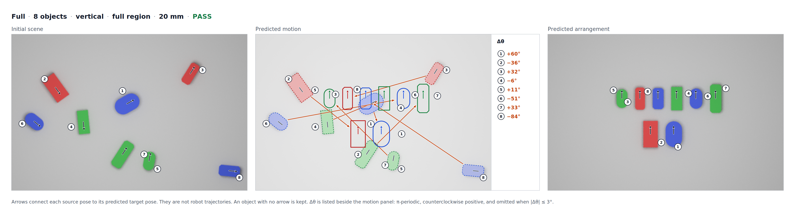
Full · 8 objects · vertical · full region · 20 mm · PASS
SVG · PDF · Reference render
Ten validation scenes from commit 26dca53. Each figure shows the initial scene, the predicted motion, and the predicted arrangement. An arrow connects a stored source pose to the stored predicted target pose. It is not a robot trajectory. Objects without an arrow are kept. Seven pass and three fail. This set is not a success rate.
The README also shows one full arrangement of six objects. That scene was inferred on the validation split and passed the same judge. It is not part of the seven-pass, three-fail count, and it is not a success rate.
Δθ is the change in heading, with period 180°, counterclockwise positive. It is omitted when the change is 3° or less.
Contact sheet · Summary · Side-by-side renders

Full · 8 objects · vertical · full region · 20 mm · PASS
SVG · PDF · Reference render
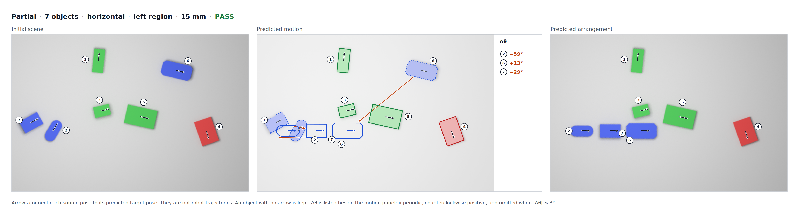
Partial · 7 objects · horizontal · left region · 15 mm · PASS
SVG · PDF · Reference render
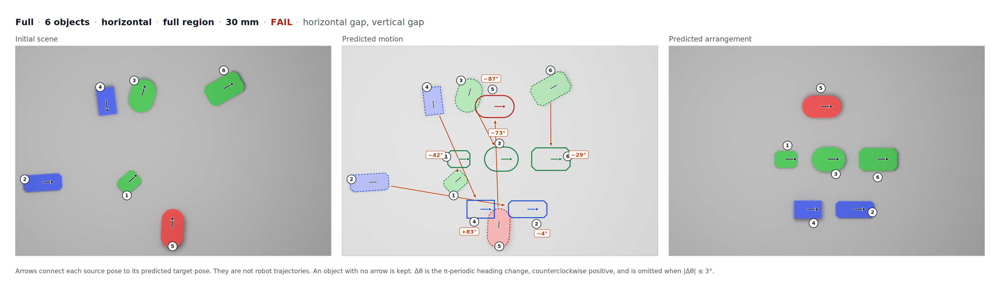
Full · 6 objects · horizontal · full region · 30 mm · FAIL · horizontal gap, vertical gap
SVG · PDF · Reference render
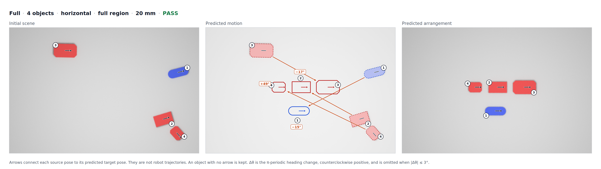
Full · 4 objects · horizontal · full region · 20 mm · PASS
SVG · PDF · Reference render
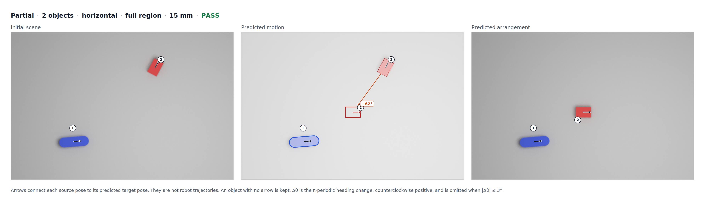
Partial · 2 objects · horizontal · full region · 15 mm · PASS
SVG · PDF · Reference render
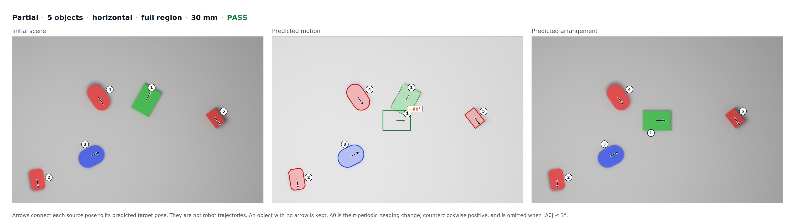
Partial · 5 objects · horizontal · full region · 30 mm · PASS
SVG · PDF · Reference render
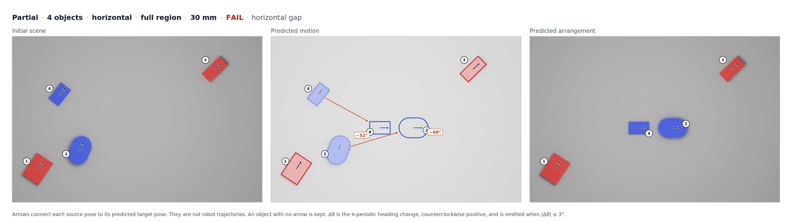
Partial · 4 objects · horizontal · full region · 30 mm · FAIL · horizontal gap
SVG · PDF · Reference render
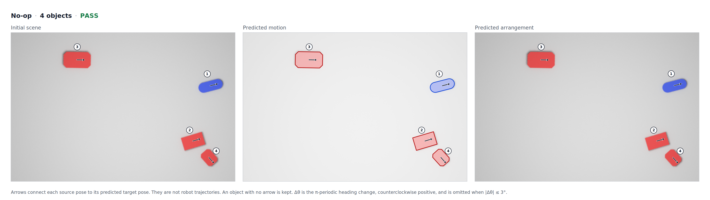
No-op · 4 objects · PASS
SVG · PDF · Reference render
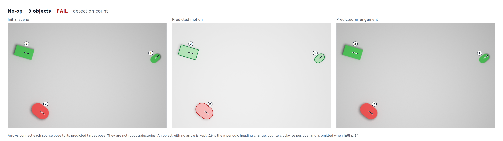
No-op · 3 objects · FAIL · detection count
SVG · PDF · Reference render
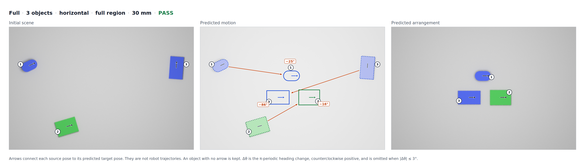
Full · 3 objects · horizontal · full region · 30 mm · PASS
SVG · PDF · Reference render
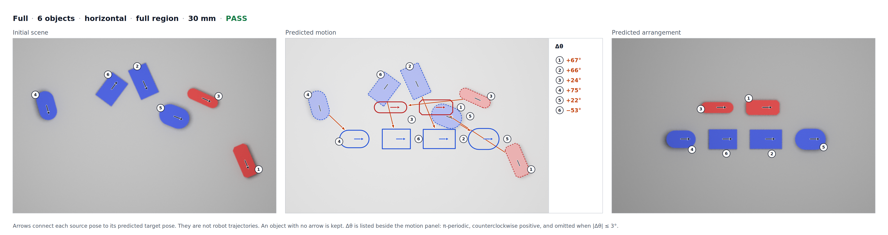
Full · 6 objects · horizontal · full region · 30 mm · PASS
Additional validation example. Not part of the seven-pass, three-fail count, and not a success rate.
SVG · PDF · Predicted render